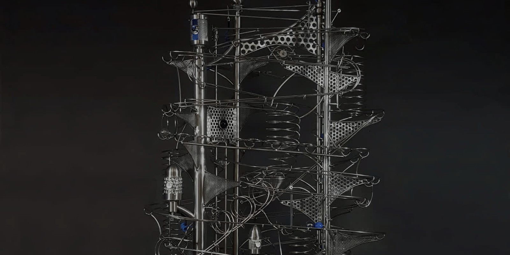
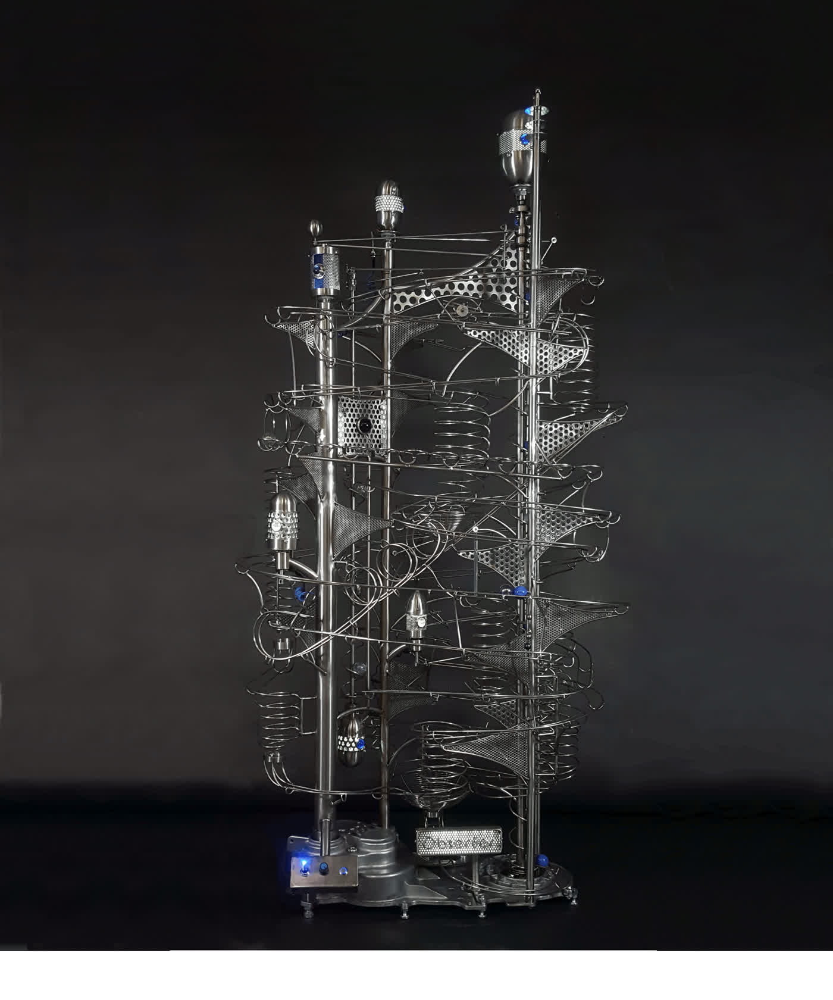

Private
collections
Tabletop and statement works for homes, offices and personal collections.

Commission a sculpture
Share an idea with no obligation. Robert can explore the scale, materials, movement and character that could make the work belong uniquely to you.
Start a project brief ↓Made around you
The process can begin with a space, a mechanism, a memory, a theme, a material or simply the desire to create a memorable focal point.
Tabletop and statement works for homes, offices and personal collections.
Distinctive kinetic focal points for offices, hospitality, healthcare and retail environments.
Larger works developed in response to a wall, lobby, public space or specific viewing experience.
The commission process
A clear, collaborative process keeps the collector involved while protecting the freedom required to create an original work.
Discuss desired size, location, style, components, themes and any specific ideas.
Share photographs, measurements and how people will encounter the sculpture.
Robert develops a visual direction and sends a scanned concept for review.
Confirm price, deposit, production schedule, delivery and installation requirements.
The sculpture is handcrafted, with selected progress photographs and videos shared along the way.
Every track and mechanism is adjusted and repeatedly tested for reliable performance.
Detailed photographs and a complete video are provided before the work leaves the studio.
The sculpture is carefully packed, shipped and supported through safe arrival and setup.
Photographs, measurements and conversation are translated into a proposed direction and sketch before price, deposit and timing are agreed.
Selected photographs and videos keep the collector connected while Robert solves the engineering and artistic details.
The finished work is thoroughly tested and documented before shipment, followed by contact after arrival.

Space planningBefore a formal concept
A photograph and measurements can help answer the first practical questions: scale, orientation, viewing distance, power, sound and installation.
Use the space brief ↗Begin the conversation
The brief collects enough information for a useful first response. It does not commit you to a project.